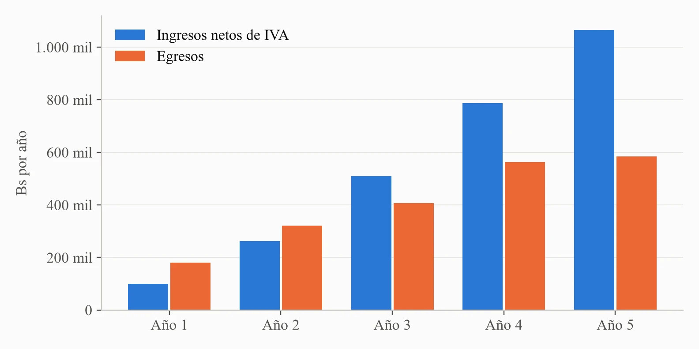

Cada vaciado, pesado. Cada semana, anticipada.
Software boliviano para gestionar la recolección de residuos sólidos y predecir su generación con Random Forest, sin sensores importados.
En producción desde el 18/11/2026La recolección se planifica a ojo
- Pesajes en libretas y planillas sueltas: nadie sabe cuántos kilos genera cada punto.
- Rutas por costumbre: viajes a contenedores a medio llenar y desbordes en horas pico.
- Sin pronóstico, el presupuesto de recolección no se puede justificar con datos.
300 / 343
municipios de Bolivia siguen depositando sus residuos en botaderos; solo 43 tienen relleno sanitario.
Kilos registrados, rutas planificadas, semanas anticipadas
- El operario registra el peso desde el teléfono, en el punto.
- El supervisor planifica jornadas, cuadrillas y vehículos.
- Un Random Forest pronostica kilos por punto con su margen de error y emite alertas de desborde.

Lo que la competencia internacional no puede ofrecer aquí
| Criterio | Sensoneo · Ecube Labs · Bigbelly | Residata |
|---|---|---|
| Hardware | Sensores o estaciones propias, importadas | Ninguno: teléfono y balanza existentes |
| Dato base | Volumen estimado por llenado | Peso real en kilogramos |
| Pronóstico | Umbrales de llenado | Random Forest con calendario académico o municipal |
| Precio y soporte | En dólares o euros, soporte remoto | En bolivianos, soporte local y factura nacional |
Un piloto real, en producción
DSUUniversidad Autónoma Gabriel René Moreno, cliente piloto
50/50pruebas automáticas aprobadas
A+Mozilla Observatory y Qualys SSL Labs
- 27 requisitos funcionales y 34 casos de uso implementados, 4 roles.
- API en Microsoft Azure con TLS, respaldo diario y monitoreo de disponibilidad.
- Lighthouse móvil: 100 en accesibilidad y buenas prácticas.
391 instituciones en Bolivia
Bs 32,5 MTAM anual: 343 municipios en plan Red y 48 universidades en plan Campus
Bs 5,5 MSAM anual: 43 municipios con relleno sanitario y 48 universidades
Bs 1,2 MSOM al año 5: 17 clientes Campus y 8 clientes Red
Suscripción mensual con entrada gratuita
El plan Inicial sin costo deja medir una sede; la predicción y el mapa se pagan. El pago anual equivale a diez meses.
| Plan | Bs/mes | Implementación |
|---|---|---|
| Inicial | 0 | autoservicio |
| Campus | 2 900 | 9 000 |
| Red | 7 500 | 18 000 |

Año 3primer flujo positivo
13,2clientes Campus para el equilibrio
Bs 212 milVAN al 15 %
64,2 %TIR
Quienes lo construyeron
Estudiantes de Ingeniería en Sistemas de la FICCT-UAGRM que diseñaron, programaron, probaron y desplegaron el sistema completo.
- Carlos Gabriel Lobo Gutiérrez
Dirección del proyecto, desarrollo y configuración - Leonardo Serrate Basma
Desarrollo, aseguramiento de la calidad y pruebas
Buscamos Bs 170 000
Cubre el déficit de los dos primeros años más 20 % de contingencia, hasta que el flujo se vuelve positivo en el año 3.
- Capital semilla no reembolsable: concurso Incuba Unión Tecnológico (Bs 48 000).
- Fideicomiso de Capital Semilla del BDP para el resto, a cinco años.
| Uso de los fondos | Bs |
|---|---|
| Equipo (sueldos y cargas) | 111 407 |
| Marketing y ventas | 11 638 |
| Infraestructura en la nube | 7 271 |
| Constitución, contabilidad e impuestos | 8 939 |
| Contingencia (20 %) | 30 745 |
Mida la primera semana con nosotros.
- Sitio: residata-bolivia.vercel.app
- Sistema en producción: dsu-uagrm.vercel.app
- Correo: rekteado@gmail.com